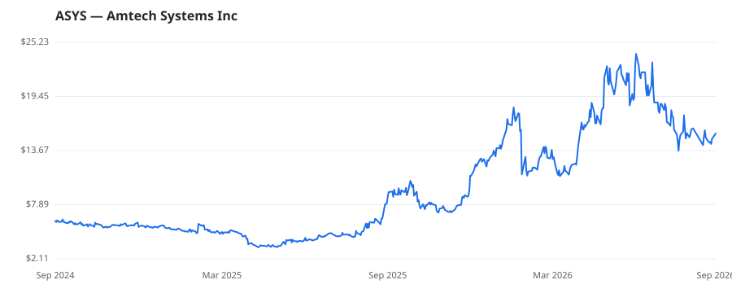

bullish · bearish · n/a — dots: price>SMA10 · SMA10>SMA50 · SMA50>SMA200 · up>down volume (20d)
Capital Goods · micro cap

Amtech Systems Inc provides equipment, consumables and services for semiconductor device packaging, wafer production and device fabrication. Its products are used to fabricate and package GPUs for AI applications, SiC and Si power devices, and other optical, analog and digital devices, and are sold to semiconductor packaging, electronic assembly and device fabrication companies. It operates through two segments: Thermal Processing Solutions, which includes conveyorized reflow equipment, high-temperature conveyorized furnaces and diffusion furnaces with maximum revenue; and Semiconductor Fabric SPECIAL INDUSTRY MACHINERY, NEC · website
| Revenue | $101.2M | Net income | $-8.5M |
|---|---|---|---|
| Operating income | $-6.7M | Diluted EPS | $-0.60 |
| Assets | $119.0M | Equity | $82.4M |
This name produced 0.0% of the ranked funds’ total alpha.
🛒 Newly buying: AIGH Capital Management LLC (+193%, 2.6% of book) · Capelight Capital Asset Management LP (+12%, 0.6% of book) · Panoramic Capital, LLC (+68%, 0.2% of book) · KTF INVESTMENTS, LLC (+9%, 0.0% of book)
| Fund | Fund alpha vs SPY | Position | % of book |
|---|---|---|---|
| AIGH Capital Management LLC | +193% | $29M | 2.6% |
| Palisades Investment Partners, LLC | +22% | $2M | 0.7% |
| Capelight Capital Asset Management LP | +12% | $1M | 0.6% |
| Panoramic Capital, LLC | +68% | $1M | 0.2% |
| KTF INVESTMENTS, LLC | +9% | $0M | 0.0% |
Hedge data: SEC EDGAR 13F · ranked funds beat SPY in >50% of their quarters · fund alpha = mirror-portfolio return minus SPY.